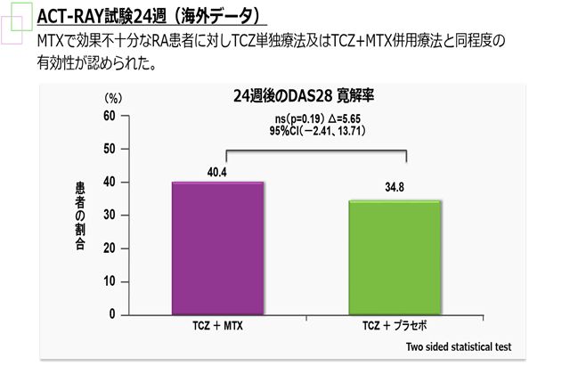
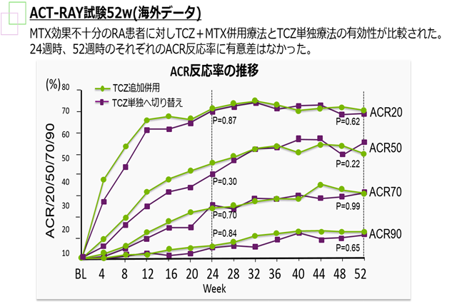

アクテムラはMTX併用の有無で有効性が変わらない（ACT-RAY）
ACT-RAY study :
TCZ単剤とMTX併用の1年間の有効性・安全性を比較検討することを目的に行われた二重盲検比較試験

Dougados M, et al. Ann Rheum Dis.2013; 72 :43-50(MAPS:D85033)

Dougados M, et al. Ann Rheum Dis 2014;73:803-809(MAPS:E19455)
24週時点のDAS寛解率はACT単剤とACT+MTX群で差がなく、ACR反応率においても同等の推移を示した